BabyCL
Learns words and images together from a child's video, in a single pass.
method page →egolearn is an open-source library for training models on first-person video and testing what they learned.
# install from a cloned repository $ uv sync --extra train # validate and train on synthetic data, CPU only $ uv run egl train toy_streaming dry_run=true $ uv run egl train toy_streaming # list registered datasets and access tiers $ uv run egl data list
The example needs no dataset access or pretrained weights. Method guides cover additional training sources. For real data, follow the BabyCL training guide, checkpoint evaluation guide, and benchmark suite setup.
Children learn from one long stream of experience. They see a moment once, in order, and keep learning as it unfolds. Most vision models instead train on shuffled photos, seen many times over. egolearn trains models on video the way a child sees it.
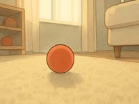
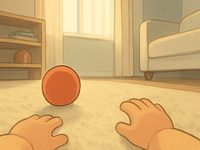
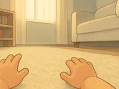
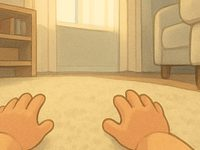
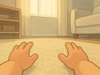
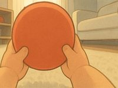
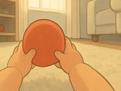
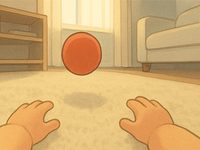
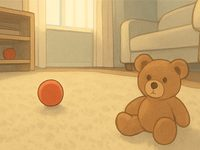
First-person recordings for streaming learning and video understanding benchmarks.
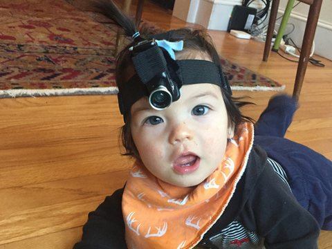
Three children filmed from 6 to 32 months, about 500 hours.
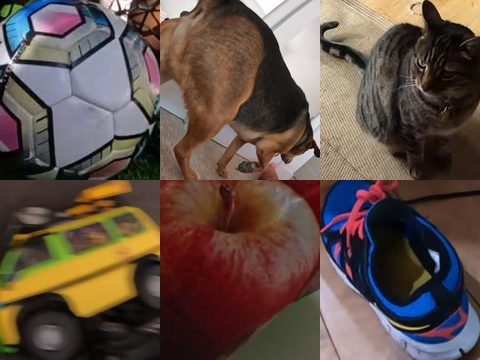
High-resolution video from many children at home and in preschool.
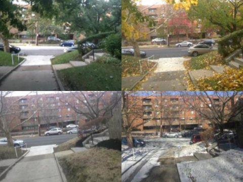
One student's daily routine, recorded over nine months.
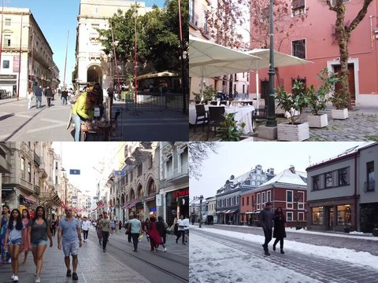
Long, uncut city walks in high resolution.
Methods that keep learning from new video without forgetting what came before.
Learns words and images together from a child's video, in a single pass.
method page →Groups recent frames into events and learns from them with replay.
method page →Tests from developmental psychology and computer vision, with fixed data and protocols, so results compare across papers.
Find the picture that matches a word.
Pick the two-word phrase that fits the picture.
Match two pictures to two phrases that differ in one detail.
Does the model group new objects by shape or by texture?
Recognize the same relation in a new place.
How much category information the features hold.
Spot the video that breaks physics.
Loading published results…
Accuracy and shape preference are percentages. Values show mean ± sample sd across the listed training seeds. Single checkpoints have no sd; imported references can have an unknown training seed. Shape preference is not classification accuracy. N/A marks an inapplicable benchmark; a dash indicates missing or incompatible evaluations. Architectures, training budgets, and evaluation resolutions can differ. Expand a method’s sources for checkpoint and evaluation records.
Image credits. SAYCam participant from Sullivan et al., Open Mind (2021), CC BY 4.0, cropped. BabyView object crops from the BabyView public release, CC0. Walking Tours: walks in Valletta, Granada, Istanbul, Kaunas by POPtravel, CC BY 3.0, via Wikimedia Commons. Ego4D collage from ego4d-data.org. KrishnaCam frames from the KrishnaCam project page (Singh et al., 2016).